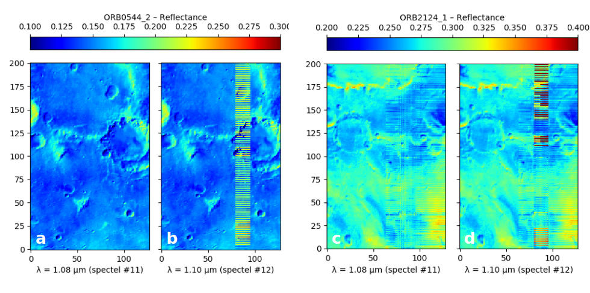
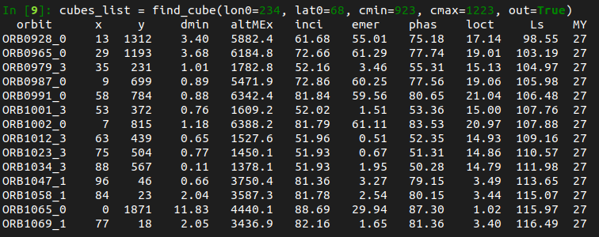

Data handling
In the following, we assume that we have imported the module as follows:
Saving & Loading OMEGA data
The importation and correction of OMEGA data cubes take some time to be achieved.
Thus, it is convenient to be able to directly save and load
OMEGAdata object
to avoid reprocessing them every time.
The saving and loading is done using the pickle
module.
Saving OMEGA data
Assuming we have an OMEGAdata object
omega, the easiest and recommended way to save it is to use the
autosave_omega function:
Info
This function will automatically define the filename depending on the OMEGA cube ID, the OMEGA-Py major version, and the status of the thermal and atmospheric corrections.
Observations that are saved with
autosave_omega
can then be loaded easily with the
autoload_omega
function, as they use the same filenaming convention.
If you prefer to manually define the filename when saving the data, it can be done
by using the save_omega function
instead.
Correcting and saving OMEGA observations in one single command
OMEGA-Py includes functions that will compute the thermal & atmospheric corrections as
described here and
then automatically save the result for further use with
autosave_omega.
For one OMEGA cube, this can be done by calling the
corr_save_omega2 function
(instead of corr_therm_atm
which will apply the corrections and return the newly created
OMEGAdata object).
Example
Similarly, it can also be done directly for a list of OMEGA observations (that you would need
to process for a specific project) using the
corr_save_omega2_list function.
The only difference with the call for one observation is that here the cube ID (str) is
replaced by a list of cube IDs.
Example
Loading OMEGA data
Assuming that you have saved an OMEGAdata object
using the autosave_omega function,
it can be easily loaded with
autoload_omega.
As in this case, the filenames and path follows a specific convention, all it needs is
the OMEGA cube number and the status of the thermal and atmospheric corrections.
omega = od.autoload_omega('0967_3', therm_corr=False, atm_corr=False) # Cube 0967_3 with no corrections
omega_corr = od.autoload_omega('0967_3', therm_corr=True, atm_corr=True) # Cube 0967_3 with both corrections
Not specifying the corrections status
If the correction status is not specified, or the exact ID of the OMEGA cube is not provided and there is an ambiguity, it will show all the matching products and ask you to choose the one you want to load by entering the corresponding number (see figure below).
It is also possible to load an previously saved OMEGA observation by specifying its exact
filename, using the load_omega function:
Loading multiple OMEGA observations
If needed to load multiple previously computed and saved OMEGA observations, it can be done
by using the
load_omega_list2 function, which
is based on autoload_omega.
The only difference between the two is that in this case the cube ID (str) is replaced by a list
of cube IDs:
omega_list = od.load_omega_list2(
['0967_2', '0967_3', '0967_4', '0979_3'], # List of OMEGA cubes to load
therm_corr=True, # With thermal correction applied
atm_corr=True # With atmospheric correction applied
)
Alternatively, it is also possible to use a more manual method with the
load_omega_list function, which
is based on load_omega and takes as an
argument the full basename of the files to load.
Finding wavelength indexes
The spectra are automatically "cleaned" during the importation of the binary files into
an OMEGAdata object by:
- sorting the wavelength in ascending order
- removing the wavelength overlap between the different channels
- removing the corrupted spectels, as identified by the
icarray
Consequently, the index of a specific wavelength may change depending on the OMEGA observation
considered, especially across the time of the mission.
So we provided an easy way to search for the index of a value in an array, that can be used
to easily retrieve the index of a specific wavelength, which will be needed to compute
any spectral criteria: the
where_closer and
where_closer_array
functions from omegapy.useful_function.
omega = od.OMEGAdata('0967_3') # Loading an OMEGA observation
i_108 = uf.where_closer(1.085, omega.lam) # Index of λ=1.085μm
i_150, i_226 = uf.where_closer_array([1.5, 2.26], omega.lam) # Indexes of λ=1.5μm and λ=2.26μm
Dealing with OMEGA spectra that have different wavelength arrays
As mentioned above, it is possible that different OMEGA observations may not have the exact same
wavelength array, as some spectels got corrupted across the duration of the mission.
It may be of importance especially if you want to compute operations over multiple spectra
from different observations (spectral ratio, average...), so OMEGA-Py include some
functions to help you tackle this: the
shared_lam and
shared_lam_omegalist functions.
Example 1: individual spectra
Let's assume we have 3 spectra as 1D arrays sp1, sp2, sp3 and their corresponding
wavelength arrays lam1, lam2, lam3.
We can find the common wavelengths with
Then we sample the spectra to match the new common wavelength array
sp1_new = sp1[uf.where_closer_array(lam_new, lam1)]
sp2_new = sp2[uf.where_closer_array(lam_new, lam2)]
sp3_new = sp3[uf.where_closer_array(lam_new, lam3)]
And we can now perform any operations on the spectra as they all have the same dimension and wavelengths.
Example 2: list of OMEGA observations
Let's assume we have 3 OMEGAdata
objects omega1, omega2, omega3.
We can find the common wavelengths with
Then we search for the indexes that correspond to the wavelengths of the new array
i_lam1 = uf.where_closer_array(lam_new, omega.lam1)
i_lam2 = uf.where_closer_array(lam_new, omega.lam2)
i_lam3 = uf.where_closer_array(lam_new, omega.lam3)
And we just need to sample the spectra to match the new common wavelength array when we get them from the data cube.
sp1 = omega1.cube_rf[x1, y1, i_lam1] # Loading the spectrum from pixel (x1, y1) of omega1, sampled on the new wavelength array
sp2 = omega2.cube_rf[x2, y2, i_lam2] # Loading the spectrum from pixel (x2, y2) of omega2, sampled on the new wavelength array
sp3 = omega3.cube_rf[x3, y3, i_lam3] # Loading the spectrum from pixel (x3, y3) of omega3, sampled on the new wavelength array
And we can now perform any operations on the spectra as they all have the same dimension and wavelengths.
Generating masks
For the scientific analysis of OMEGA data some pixels of the data cubes need to be removed because they correspond to internal calibration measurements, or are corrupted. Extensive description of filtering criteria that have been used for the analysis of OMEGA observations can be found in several published studies, e.g., Langevin et al. (2007)1, Poulet et al. (2007)2, Ody et al. (2012)3, Vincendon et al. (2015)4, Stcherbinine et al. (2021)5.
The omega_mask function generate masks
associated to an OMEGA observation that can be used in all the display functions presented
in Data visualization.
Default
By default, the function will generate a mask that takes into account all the calibration lines as described in the SOFT10_README.txt (see below), but it can be refined to exclude some pixels depending on their associated observation geometry or detector behavior using optional arguments of the function.
Calibration lines – Note from the SOFT10_README.txt
The last 4 scans (16 pixels), 2 scans (32 pixels) or 1 scan (64, 128
pixels) of idat and jdat have only IR data (spectels 0 to 255).
There is calibration data at the beginning of each cube for the visible channel, at the beginning of the ORBNNNN_0.QUB cubes for the IR channels The number of calibration scans depend on the pixel length (16 to 128) and the summation (1, 2 or 4 for 128 pixel modes):
-
for every cube, the first scan (128 pixels x 4), 3 scans (128 x 2) 7 scans (128 x 1), 14 scans (64 pixels), 28 scans (32 pixels), 56 scans (16 pixels) of the visible channel (spectels 256 and above) correspond to an internal calibration
-
for cubes with names NNNN_0 (first cube in a sequence), the first 6 scans (128 x 4), 12 scans (128 x 2), 24 scans (128 x 1) 48 scans (64 pixels), 96 scans (32 pixels) or 192 scans (16 pixels) of the IR channel (spectels 0 to 255) correspond to an internal calibration (closed shutter, lamp on at 6 different levels, in order 0,4,3,2,1,0).
Customizing masks
Viewing geometry
The viewing geometry can affect the spectra measured by OMEGA (e.g., Pommerol & Schmitt, 20086), so studies focussing on the surface used to restrain themselves to pixels acquired in near-nadir mode.
Thus, if set, the emer_lim keyword will remove all the pixels with an emergence angle larger
than the value passed as an argument.
And similarly, the inci_lim keyword will remove all the pixels with an incidence angle larger
than the given value.
Detector temperature
The OMEGA IR detectors (C & L channels) have been designed and calibrated to operate at temperatures below 80 K, above this value the dark current level and the noise will increase. However, a certain amount of time is needed to cool them down to this temperature before an acquisition, so it happened that the detectors were not at their nominal temperature during the entire acquisition of a data cube, especially as the performance of the cryocoolers started to decline around MY 30.
If the tempc_lim is set, all pixels acquired with the C-channel detector at a temperature
higher than the provided one (in °C) will be removed.
Near-saturation of pixels
Near-saturation of some pixels can occur when observing a surface element brighter than expected (e.g., sun-lighted tilted surface). Vincendon et al., (2015)4 introduce a criterion to avoid non-linearity effects when approaching the saturation based on the value measured by the spectel #40 (i.e., λ = 1.486μm), by excluding pixels with a value higher than a defined threshold.
If the limsat_c keyword is set, pixels measured with a value higher than the given one (in DN)
will be removed.
Hiding corrupted columns in 128-px wide orbservations
As described in Corrupted 128-px wide cubes, an instrumental issue perturbs 128 pixels wide observations from orbit 513 to 3283. The easiest way to handle it is to ignore the corrupted columns.
This is done if the hide_128 option is activated.
Low quality observations
In some cases, one may want to completely ignore some OMEGA cubes as they are considered as "low quality observations".
It can be done by checking some parameters of the observation to ignore the unwanted ones
after the data importation, but as an example
omega_mask has its own pre-implemented
low-quality test.
If the reject_low_quality keyword is set to True, such observations will be hided by having
a mask entirely filled with NaN.
Pre-implemented low quality criterion
Is condidered as "low quality" by the
omega_mask function
(according to Stcherbinine et al. (2021)5) any OMEGA cube that
meet one of the conditions below.
| Test | Description |
|---|---|
omega.data_quality == 0 |
Low quality cube |
omega.quality == 0 |
|
(numCube == 0) and (npixel == 64) and (omega.bits_per_data == 1) |
|
not omega.orbit in good_orbits_OBC |
Orbit not in the "good orbits" file (relative to on-board calibration (OBC)) |
omega.target != 'MARS' |
Mars pointing only |
omega.mode_channel != 1 |
All 3 channels required |
omega.point_mode == 'N/A' |
Unknown pointing informations |
Example of the masks used in Stcherbinine et al. (2021)5
mask = od.omega_mask(
omega,
emer_lim=10, # Emergence angles < 10°
inci_lim=70, # Incendence angles < 70°
tempc_lim=-194, # Detector temperature < -194°C
limsat_c=500, # Spectel #40 < 500 DN
hide_128=True, # Remove corrupted columns
reject_low_quality=True # Ignore low-quality observations
)
In addition to this instrumental criteria, spectral criteria to filter clouds and surface ice were added to generate the masks.
Adding spectral criterion to the masks – Illustration with surface ice
Assuming that you have loaded an OMEGA observation omega and computed the
associated band depth at 1.5μm bd15 and default mask mask, you can add
the filtering of all the pixels with a BD > 0.1 (spectral criterion used
to remove the surface ice in Stcherbinine et al. (2021)5) with:
Corrupted 128-px wide cubes
From orbit 513, observations acquired in the 128-px wide mode present a disruption of some columns (Ody et al., 20123; Vincendon et al. 20154):
-
From orbit 513 to 2123, the columns #81 to #96 (i.e., 12.5% of the image) exhibit 44 corrupted wavelength, distributed across the entire spectral range according to a regular pattern (4 contiguous spectels every 32 spectels, from spectel 12 or 28 depending on the observation, every other row of the image ; cf panels a & b). For these observations, it is possible to partially reconstruct the cube by using spatial and spectral interpolation, which can be done using the
corr_mode_128function. -
From orbit 2124 to 3283 (no more 128-px wide acquisitions after) the corrupted wavelengths already present remained, but combined with a random noise that affected all columns between #61 and #128 (i.e., half of the image ; cf panels c & d). This second effect, random and affecting all rows and wavelengths cannot be corrected, so the corrupted columns have to be removed.

Observation search
find_cube
The find_cube function allows you to
search for all the observations that include a specific location on Mars (over the first few
thousands orbits).
Plus, if you have the corresponding .NAV files, it will display geometry informations
for the pixel of the cube which is the closest to the target coordinates (see figure below).

Nadir-only filtering
It is possible to filter the results so the search only returns the OMEGA cubes
acquired with a nadir viewing geometry with the nadir_only argument:
nadir_only = True→ Only returns cubes acquired with nadir geometry.nadir_only = False(default) → Returns all matching OMEGA cubes.
JMARS
Alternatively, as OMEGA data are included in JMARS it is possible to use this tool to perform a request to search for OMEGA observations as a function of time, location...
Then, if you export the search results as a .csv file, you can use the
import_list_obs_csv function
to load it and extract the cube ID into an array that can be passed as an argument to the
OMEGA-Py functions.
JMARS
JMARS is an acronym that stands for Java Mission-planning and Analysis for Remote Sensing. It is a geospatial information system (GIS) developed by ASU's Mars Space Flight Facility to provide mission planning and data-analysis tools to NASA scientists, instrument team members, students of all ages and the general public.
-
Y. Langevin, J.-P. Bibring, F. Montmessin, F. Forget, et al. (2007). Observations of the south seasonal cap of Mars during recession in 2004–2006 by the OMEGA visible/near-infrared imaging spectrometer on board Mars Express. JGR Planets 112 (E8). doi:10.1029/2006JE002841 ↩
-
F. Poulet, C. Gomez, J.-P. Bibring, Y. Langevin, et al. (2007). Martian surface mineralogy from Observatoire pour la Minéralogie, l'Eau, les Glaces et l'Activité on board the Mars Express spacecraft (OMEGA/MEx): Global mineral maps. JGR Planets 112 (E8). doi:10.1029/2006JE002840 ↩
-
A. Ody, F. Poulet, Y. Langevin, J.-P. Bibring, et al. (2012). Global maps of anhydrous minerals at the surface of Mars from OMEGA/MEx. JGR Planets 117 (E11). doi:10.1029/2012JE004117 ↩↩
-
M. Vincendon, J. Audouard, F. Altieri, A. Ody, (2015). Mars Express measurements of surface albedo changes over 2004–2010. Icarus 251, 145–163. doi:10.1016/j.icarus.2014.10.029 ↩↩↩
-
A. Stcherbinine, M. Vincendon, F. Montmessin, P. Beck (2021). Identification of a new spectral signature at 3 µm over Martian northern high latitudes: implications for surface composition. Icarus, 369, 114627. doi:10.1016/j.icarus.2021.114627 ↩↩↩↩
-
A. Pommerol & B. Schmitt (2008). Strength of the H2O near-infrared absorption bands in hydrated minerals: Effects of measurement geometry. JGR Planets 113 (E12). doi:10.1029/2008JE003197 ↩
-
A. Stcherbinine (2021). PhD thesis, Université Paris-Saclay. NNT:2021UPASP064 ↩